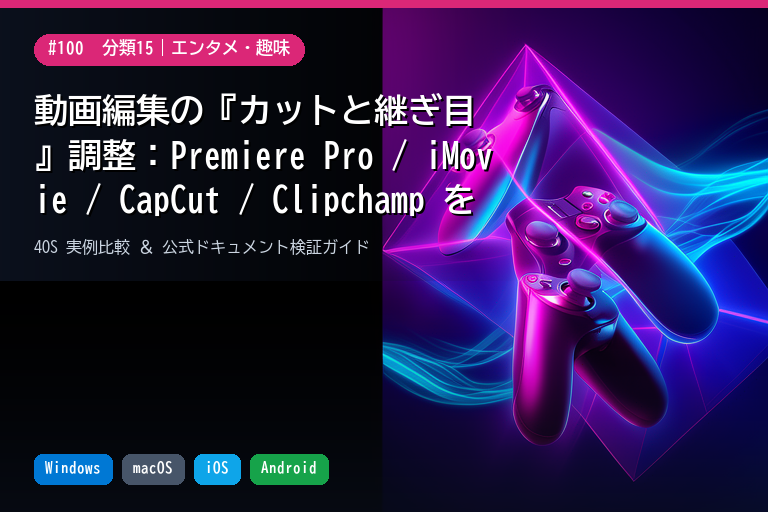

#100｜分類15: エンターテインメント・趣味 2026-11-28

動画編集の『カットと継ぎ目』調整：Premiere Pro / iMovie / CapCut / Clipchamp を使い分けるクロスプラットフォーム実例比較 (第100 回) ｜ Windows・macOS・iOS・Android
「スマホで撮った動画をPCで仕上げたいけれど、デバイスごとに操作が違って混乱する」「カットのつなぎ目が不自然で、どう調整すればいいか分からない」といった悩みをお持ちではありませんか？
動画制作において、素材の確保（スマホ）から高度な編集（PC）までをシームレスにつなぐワークフローの構築は非常に重要です。この記事では、Windows、macOS、iOS、Androidの4つのOS環境において、標準アプリや公式推奨ツールを使い分けながら「カットと継ぎ目」を効率的に調整する具体的な手順を徹底比較します。
この記事を読めば、お持ちのデバイスを最大限に活かした最適な動画編集フローが見つかるはずです。
4OS比較早見表
| OS | 推奨標準アプリ / 公式ツール | 特徴・得意なこと | カット・継ぎ目の調整 |
|---|---|---|---|
| Windows | Clipchamp / Premiere Pro | 高機能なタイムライン操作、ビジネス利用に強い | 自動切り替え機能や高度なエフェクト対応 |
| macOS | iMovie | 直感的なUI、Appleエコシステムとの親和性 | トリムツールによる直感的なカットと自動接続 |
| iOS | iMovie / 写真アプリ | どこでも編集可能、AirPlay連携が強力 | シンプルなトリム操作、iCloud同期でPCへ継承 |
| Android | Google フォト / CapCut | 高い自由度、Googleエコシステムとの統合 | Googleフォトでの簡易カット、CapCutでの高度調整 |
1. Windows 11 での実例手順
Windows環境では、標準搭載の「Clipchamp」を活用することで、複雑なソフトをインストールせずに素早い編集が可能です。より高度な制作を行う場合はAdobe Premiere Proへの移行を検討します。
Clipchamp を使用した基本操作
- プロジェクトの開始: 「Clipchamp」アプリを起動し、「新しいビデオを作成」を選択して素材を追加します。
- カットの挿入: タイムライン上の動画クリップをクリックし、不要な部分を削除または分割します。
- 継ぎ目の調整: Clipchampでは「自動切り替え」機能により、基本的なつなぎ目をスムーズに処理できます。※より高度なクロスフェード（滑らかな重なり）を適用する場合は、手動でトランジションメニューからスライダー操作を行う必要があります。
高度な編集への移行
プロレベルの正確なカット調整が必要な場合は、Adobe Premiere Pro を使用します。注意点として、Premiere ProはMicrosoft Storeではなく、Adobe公式サイトからインストーラーをダウンロードして導入するのが公式の推奨手順です。
2. macOS での実例手順
macOSおよびiOS環境では、Apple純正の「iMovie」が最も安定したワークフローを提供します。
iMovie を使用した基本操作
- プロジェクトの作成: Macでは「ファイル」→「新規プロジェクト」、iPhone/iPadでは「写真」アプリ内または「ビデオ」タブから開始します。
- カット（トリム）: タイムライン上のクリップの両端にあるハンドルをドラッグすることで、直感的に長さを調整できます。
- 継ぎ目の調整: iMovieの仕様として、カットした隣接するクリップは自動的に接続されます。特定の「クロスフェード」効果を適用したい場合は、トランジションメニューから個別に選択する必要があります。
デバイス間連携（AirPlay）
iPhoneで簡易的なカット編集を行った動画は、iCloudフォトライブラリを経由することで、Mac側へ転送の手間なく同期・共有が可能です。この「デバイスの壁を越えた素材共有」がAppleエコシステムの強みです。
3. iOS（iPhone / iPad）での実例手順
モバイル端末では、「写真」アプリによる超簡易編集と、外部アプリによる高度な調整を使い分けるのがコツです。
「写真」アプリでのクイックカット
- トリム機能: 写真アプリで動画を選択し「編集」をタップ。下のスライダーを動かすだけで、不要な前後を瞬時にカットできます。
- 継ぎ目の調整: 標準機能のみではクロスフェード等の複雑なつなぎ目調整には制限があります。
高度な調整（CapCutの活用）
より滑らかな継ぎ目やエフェクトが必要な場合は、公式アプリのCapCutを推奨します。App Storeから入手でき、モバイルでもPCに近い感覚で精密なカット操作が可能です。
4. Android での実例手順
AndroidではGoogle純正の利便性と、強力なサードパーティ製アプリの組み合わせが主流です。
Google「写真」アプリでの編集
- カット: 動画を選択し「編集」ボタンからトリム機能を使用します。
- 継ぎ目の調整: 自動的なつなぎ目はスムーズですが、高度なトランジションは制限があるため、簡易的なカット用途に向いています。
CapCut を使用した詳細編集
よりクリエイティブな表現が必要な場合は、Google PlayストアからCapCutをインストールして使用します。Android版はUIの更新頻度が高いため、常に最新バージョンを維持することがスムーズな操作の鍵となります。
よくあるトラブルと解決チェックリスト
動画編集やデバイス連携中に遭遇しやすいエラーへの対処法をまとめました。
エラー A: 「素材が開けない」「読み込みに失敗」
- Windows (Clipchamp): 高解像度動画で動作が重い場合、コーデックの問題が考えられます。標準機能での解決策として、まずは「メディアの保存場所を変更」するか、ファイル名の変更を試してください。
- macOS/iOS/Android: HEVC (H.265) 形式が認識されない場合、QuickTime Player等の標準アプリで一度フォーマットを確認します。AndroidではGoogleファイルエクスプローラー等で形式の互換性を確認してください。
エラー B: 「画面が割れる」「ミラーリング・キャスト中に音が出ない」
- Windows: ディスプレイ設定で出力先を確認し、Microsoftサポートのガイドに従い「サウンド設定」から出力デバイスをHDMI接続のモニターへ手動で変更してください。
- macOS/iOS: AirPlayで音がiPhoneから出る場合は、Macの「システム設定」→「サウンド」で出力先をMacに変更するか、コントロールセンターから再確認します。
- Android: Chromecast等のキャストが不安定な場合は、Google Homeアプリからデバイスを再起動し、Wi-Fi帯域（2.4GHz/5GHz）を統一してください。
エラー C: 「アプリが起動しない」「保存場所が見つからない」
- Windows: Clipchampが終了する場合、「設定」→「プライバシーとセキュリティ」でバックグラウンド活動の権限を確認し、Microsoft Storeから再インストールを試みてください。
- macOS/iOS/Android: ストレージ不足が原因であることが多いため、「設定」→「一般」→「ストレージ」で空き容量を確認してください。また、App StoreやPlayストアでの最新アップデートの有無も確認必須です。
まとめ：快適なマルチOS環境を作るポイント
4つのOSを使い分ける際の鍵は、「各OSの得意分野に合わせた役割分担」です。
- Windows: Clipchampで素早くカットし、必要に応じてPremiere Proへ移行する重厚なワークフロー。
- macOS/iOS: iMovieとAirPlayを駆使した、シームレスなデバイス間連携による軽快な編集。
- Android: Googleフォトでの素材整理と、CapCutでの高度なつなぎ目調整のハイブリッド活用。
また、より快適な編集環境を構築するためには、周辺機器の選定も重要です。高精細なゲーミングモニターはタイムラインの微細なカット位置の把握を助け、DAC・ヘッドホンの導入は継ぎ目の音の違和感を正確にキャッチするために不可欠です。さらに、ストリーミング機器やゲームパッド（ショートカット操作の補助など）を組み合わせることで、編集から配信までの一貫したクリエイティブ環境が完成します。
参考文献・公式ドキュメント（一次情報ソース）
本記事の手順・仕様は以下の各OSおよびツールの公式ドキュメントに基づいています。OSアップデートによりメニュー名称や挙動が変わる場合があるため、最新仕様の確認にもご活用ください。